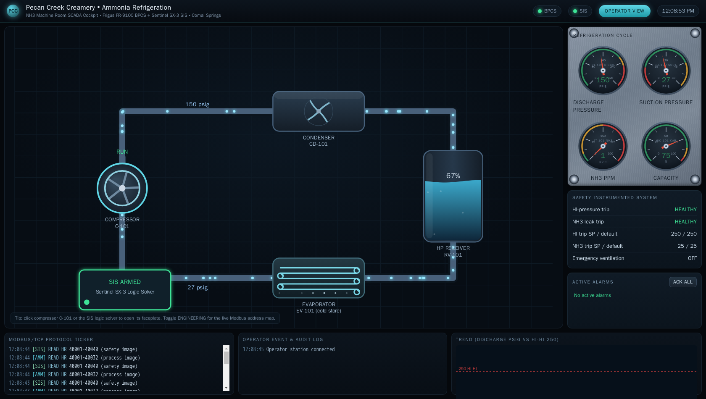
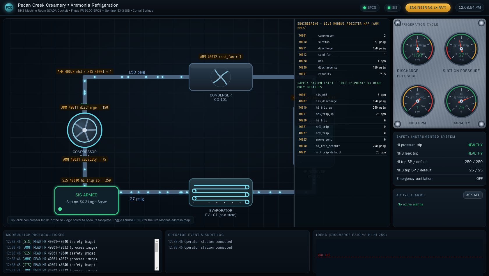

Exercise OTSOC-4.2: The TRITON Pattern
Engagement Status
| Client | Pecan Creek Creamery (fictional) |
|---|---|
| Role | OT SOC Analyst, Refrigeration and Process Safety |
| Phase | Safety Detection Response Reporting |
What you know so far: From OTSOC-4.1 you know the ammonia safety-instrumented system (SIS) at sis.pcc.local owns the high-discharge-pressure trip and the leak trip, and you know its healthy boot baseline. An adversary has now been observed reaching into the SIS configuration interface the way the TRITON malware reached into a Triconex safety controller. No release has happened. The plant is still running. Your SOC has minutes, not hours, to decide whether a trip has been weakened and whether production continues or stops. The plant runs a full operator HMI, so you can answer the question by reading the operator station the way the control-room staff do, not by hand-writing protocol scripts.
Scenario
TRITON (also called TRISIS) is the first known malware built specifically to attack a safety-instrumented system. In 2017 it reached the Triconex SIS at a petrochemical plant and tried to reprogram the safety logic, which would have removed the last barrier before a physical event. At Pecan Creek Creamery the analog is the ammonia SIS. An adversary touched its configuration interface. The operator HMI for the plant carries a "Safety Instrumented System (Independent)" panel with a FACEPLATE button that shows, live from the SIS, each trip function with its State, live Setpoint, and Design setpoint, plus the proof-test certificate and the SIS incident log. Open that faceplate, confirm whether the high-pressure trip has been weakened, read the SIS's own auto-logged record of the change, and make the safety-first call. The flag is composed from the original and the tampered setpoints you read off the faceplate.
Why this matters
In OT the priority order is inverted: Safety, then Integrity, then Availability, then Confidentiality. A weakened high-discharge-pressure trip means the SIS will not fire when discharge pressure climbs into the danger band. The worst case is an anhydrous-ammonia release, and NH3 reaches its 300 ppm IDLH (immediately dangerous to life or health) concentration where a worker can no longer escape unharmed. A trip set above the safe operating band is a trip that will arrive too late.
The TRITON pattern is dangerous precisely because the plant looks normal while it happens. Pressure is still in range. The trip row on the faceplate may still read HEALTHY. The only evidence is a setpoint that no longer matches its design value, the proof-test certificate flipping to invalid, and the incident-log entry the SIS wrote when the value changed. Reading the operator faceplate is how a control-room analyst spots that in seconds, where a hand-written script would be slower and easy to get wrong under time pressure. When a defender confirms a trip has been defeated, the inverted triad makes the decision: Safety outranks Availability, so stopping or restricting the affected process wins over keeping the line up.
The flag is composed from the original setpoint (the design value) and the tampered live setpoint, in the form the platform expects.
| Credentials in scope | Username | Password | Where it is used |
|---|---|---|---|
| None | n/a | n/a | The HMI needs no login, and Modbus/TCP reads need no login; the missing authentication is the weakness an attacker exploits |
Learning Objectives
- Open the operator HMI from the Exercise Network panel and open the SIS faceplate
- Spot the weakened high-pressure trip Setpoint against its Design value and the red TAMPERED badge
- Read the auto-logged SETPOINT CHANGED incident as the forensic record of the tamper
- Recognize the defeated safety trip as the TRITON pattern, an attack on the safety system itself
- Write the safety-first recommendation and make the stop-versus-continue call
- Report the original and tampered setpoints and compose the flag from them
| Detail | Value |
|---|---|
| Difficulty | Advanced |
| Estimated Time | 50 to 60 minutes |
| Prerequisites | OTSOC-4.1 (SIS enumeration and the boot baseline) |
| Flag | Source | Found? |
|---|---|---|
OCR{sis_trip_tampered_<masked>} |
Original design setpoint and tampered live setpoint read off the SIS faceplate |
Background: The SIS Faceplate Is the Detection
A high-fidelity operator HMI does not just draw the process. Its SIS faceplate surfaces, side by side, the live trip setpoint the safety logic actually uses and the design setpoint the trip was commissioned with. The design value never moves, so it is the ground truth for what the setpoint should be. When the live value and the design value disagree, the faceplate raises a TAMPERED badge and invalidates the proof-test certificate. Comparing the two values is the whole detection, and the HMI does the comparison for you and shows it in red.
| Faceplate element | What it tells you |
|---|---|
| Trip-function table | Each trip row: State, live Setpoint, Design setpoint |
| Red TAMPERED badge | Live Setpoint no longer equals the Design setpoint |
| PROOF TEST CERTIFICATE | Green and valid when untampered, red CERTIFICATE INVALID when a setpoint was changed from design |
| SIS incident log | The SIS auto-logs a SETPOINT CHANGED entry when a trip setpoint is written |
| Last proof test | When the SIS last proved itself by exercising its trips |
Why an independent design value matters
A read-only design value sitting next to a writable live setpoint is a deliberate OT safety design. It gives a defender a tamper baseline that an attacker cannot quietly move. When the live value and the design value disagree, something changed the trip, and the gap between them measures how far the protection was weakened. The HMI turns that gap into a badge a control-room operator can read at a glance.
Walkthrough
Step 1: Open the Operator HMI
After the lab reaches Running, the Exercise Network panel lists the Operator HMI with its IP address. The HMI serves a plain web page on port 80, so you open it in a browser. Point your browser at the HMI panel IP. Use the IP from the panel, not a hostname, because the .pcc.local names resolve only between the plant devices.
Kali - open the operator HMI in a browser
The page loads as the Pecan Creek Creamery ammonia operator station: an animated P&ID mimic, live gauges with alarm bands, and an alarm strip. On the right is a panel titled "Safety Instrumented System (Independent)" with a FACEPLATE button. The process side may look entirely normal, which is the point of a TRITON-style attack: the danger is in the safety layer, not the process variables.
The operator cockpit
The Pecan Creek Creamery ammonia operator station renders the refrigeration loop live: the compressor and condenser on the animated mimic, the suction and discharge pressure gauges, the NH3 leak reading, and the independent SIS panel. During a TRITON-style attack the whole process side reads calm, which is exactly why the danger hides in the safety layer.

Flip the cockpit into its Engineering view and every element is labelled with the live PLC register behind it, so the SIS high-pressure trip setpoint reads straight off the HMI next to its commissioned default. The setpoint gap that the faceplate later flags as TAMPERED is visible here as a live register that no longer equals its read-only design value.

Step 2: Open the SIS Faceplate and Read the Trip Table
Click the FACEPLATE button on the "Safety Instrumented System (Independent)" panel. The faceplate opens with the trip-function table: a row for High discharge pressure and a row for NH3 leak, each showing State, live Setpoint, and Design setpoint. Read the High discharge pressure row carefully.
SIS faceplate, High discharge pressure row
The High discharge pressure row reads HEALTHY, yet its Setpoint shows 320 against a Design of 250, and the faceplate has raised a red TAMPERED badge on that row. HEALTHY here only means the trip has not fired, not that it is configured correctly. The trip was raised 70 psig above where it was commissioned to fire. A high-pressure trip set at 320 will not engage while discharge pressure passes through the dangerous band around 250, so the safety function has been defeated: the SIS will arrive too late, or not at all, for the event it exists to stop. The gap between the live Setpoint and the Design value is the measurable proof that a trip was weakened. Note both numbers; the design value (250) is the original setpoint and the live value (320) is what the attacker left behind.
Step 3: Read the Certificate and the Incident Log
Below the trip table the faceplate shows the PROOF TEST CERTIFICATE block and the SIS incident log. On an untampered SIS the certificate is green and valid. Read both now.
Certificate and incident log on the faceplate
The certificate has flipped to a red CERTIFICATE INVALID, because a trip setpoint no longer matches its design value, so the SIS can no longer assert it is proven to the commissioned configuration. The incident log shows a SETPOINT CHANGED entry recording changed 250 to 320. The SIS logged its own tamper the instant the setpoint was written, so that log line is the forensic evidence: the protection is weakened now, and the SIS itself documented what changed and by how much. Pairing the TAMPERED badge from Step 2 with this auto-logged entry gives you two independent confirmations from the operator station alone, no scripting required.
Step 4: Name the Pattern
Step back from the registers and name what you are looking at. The process variables are in range. No trip has fired. The attacker did not push the plant into a dangerous state; the attacker raised the threshold at which the safety system would defend the plant, then left. A weakened trip with the process still nominal is the signature of an attack aimed at the safety-instrumented system itself, which is the TRITON / TRISIS pattern. In ATT&CK for ICS the technique is Loss of Safety (T0880): the adversary degrades or disables the safety function so a later physical event has no automatic barrier to stop it.
TRITON / TRISIS and Loss of Safety (T0880)
TRITON was the first malware built to manipulate safety-instrumented logic directly. The danger is not in what it does to the process but in what it removes from the safety layer, so the plant looks normal while its last line of defense is quietly moved out of the way. A defeated trip is a Loss of Safety condition, and a Loss of Safety condition is the highest-priority event an OT SOC can see.
The reason the tamper matters is the event it is meant to suppress. When the high-pressure trip does fire, the cockpit drops to its safe state with one unambiguous screen, and a defeated trip is precisely what removes that barrier.

Step 5: Make the Safety-First Call
You now hold everything the decision needs from the faceplate alone: a high-pressure trip raised from a design 250 to a live 320 psig, a CERTIFICATE INVALID state, and the SIS's own SETPOINT CHANGED log entry recording it. The inverted triad ranks the response. Safety outranks Availability, so the recommendation is to stop or restrict the affected refrigeration process first, restore the live setpoint to its 250 design value, then deal with line uptime. Continuing to run with a defeated high-pressure trip trades a known physical risk (an ammonia release toward the 300 ppm IDLH) for a few minutes of production, which is the wrong trade every time.
Defender recommendation to record
Finding: SIS high-pressure trip weakened from a design 250 to a live 320 psig.
Evidence: Faceplate TAMPERED badge; PROOF TEST CERTIFICATE INVALID;
SIS incident log SETPOINT CHANGED entry, changed 250 to 320.
Pattern: TRITON / TRISIS - direct manipulation of safety-instrumented logic.
ATT&CK for ICS T0880 Loss of Safety.
Priority: Safety > Integrity > Availability > Confidentiality.
Action: Stop or restrict the ammonia refrigeration process now.
Restore the high-pressure trip setpoint to its 250 design value
under change control. Treat line availability only after the
trip is restored.
Recording the call in this order is the deliverable. The flag confirms you read both setpoints correctly off the faceplate.
Optional: Verify on the Wire
The faceplate is your detection. If you want to confirm the same two numbers directly on the SIS, you may read the live high-pressure trip setpoint and its read-only design default over Modbus. The live setpoint is holding register 40010 (protocol offset 9) and the read-only design default is 40030 (protocol offset 29). Treat this as a secondary cross-check, not the primary solve.
Kali - secondary cross-check of the two setpoints
# SIS is the IP listed for sis.pcc.local in the Exercise Network panel.
SIS=10.0.0.0
python3 - "$SIS" <<'PY'
import sys
from pymodbus.client import ModbusTcpClient
c = ModbusTcpClient(sys.argv[1], port=502); c.connect()
live = c.read_holding_registers(9, count=1).registers[0] # 40010
design = c.read_holding_registers(29, count=1).registers[0] # 40030
print("design (40030):", design)
print("live (40010):", live)
c.close()
PY
The wire read returns the same pair the faceplate showed: a design of 250 and a live setpoint raised above it. The numbers match because the faceplate is just rendering these registers for the operator.
Output Interpretation
- A live Setpoint that disagrees with its Design value on the faceplate is the detection. The design value cannot be quietly moved, so it is trustworthy ground truth, and the HMI flags the gap with a red TAMPERED badge.
- A High discharge pressure row reading HEALTHY does not mean safe. HEALTHY means the trip has not fired; the Setpoint vs Design comparison is what tells you it has been weakened.
- A PROOF TEST CERTIFICATE that reads CERTIFICATE INVALID plus a SETPOINT CHANGED entry in the SIS incident log is the SIS documenting its own tamper. Two independent confirmations from the operator station beat one.
- The plant looks normal during a TRITON-style attack. Absence of an alarm is not absence of compromise; the trip itself has been moved out of the way.
Analysis Questions
1. Why compare the live Setpoint against the Design value on the faceplate rather than against a value you remember?
Reveal answer
The design value is read-only on the SIS, so an attacker cannot move it to hide the tamper. A remembered or documented value can be stale or wrong. Comparing the live Setpoint against the controller's own immutable design value gives a trustworthy, on-device ground truth, and the faceplate renders the gap as a TAMPERED badge so an operator sees it instantly.
2. The High discharge pressure row reads HEALTHY. Why is that not reassuring?
Reveal answer
HEALTHY on the trip row only means the trip has not fired. It says nothing about whether the trip is configured to fire at the right pressure. A TRITON-style attack raises the setpoint while the process is still nominal, so the row stays HEALTHY while the protection is defeated. The Setpoint vs Design comparison and the TAMPERED badge are what reveal the problem.
3. The line is still producing. Why does Safety outrank keeping it up?
Reveal answer
The inverted OT triad puts Safety above Availability because the consequence of a defeated ammonia trip is a physical release toward the 300 ppm IDLH, which endangers people. A few minutes of production is never worth running with a known-defeated safety function. The correct call is stop or restrict first, restore the trip, then worry about uptime.
4. How does the SIS incident log strengthen your finding beyond the faceplate comparison?
Reveal answer
The Setpoint vs Design comparison shows the current state. The SETPOINT CHANGED log entry shows the change as an event, with the old and new values the SIS recorded itself. Together they turn an observation into an evidenced timeline: the trip is weakened now, and the SIS documented exactly what was changed and by how much. That record is what makes a stop order defensible.
Key Takeaways
- TRITON / TRISIS is the first malware built to attack a safety controller directly; the pattern is manipulation of SIS trip logic, not the process variables, and it maps to ATT&CK for ICS T0880 Loss of Safety.
- Detect it from the operator HMI: open the SIS faceplate and compare each trip's live Setpoint against its Design value; the red TAMPERED badge and the CERTIFICATE INVALID state do the comparison for you.
- A SIS that logs configuration changes gives you on-device evidence; the SETPOINT CHANGED incident-log entry is the forensic record of the tamper.
- A normal-looking plant during a SIS attack is expected; the protection is defeated quietly, so absence of an alarm proves nothing.
- The inverted triad makes the call: a defeated trip is a Safety event, so stop or restrict first, restore the setpoint, then handle availability.
Capture the Flag
Compose the flag from the two setpoints you read off the SIS faceplate: the original design value and the tampered live Setpoint on the High discharge pressure trip. The platform expects the OCR{sis_trip_tampered_<original>_to_<tampered>} form, lowercase with underscores, the original-to-tampered setpoint flag. Submit it in the OCR platform.
| Flag | Where | Form |
|---|---|---|
| Setpoint-tamper marker | SIS faceplate: Design value and live Setpoint | OCR{sis_trip_tampered_<masked>} |